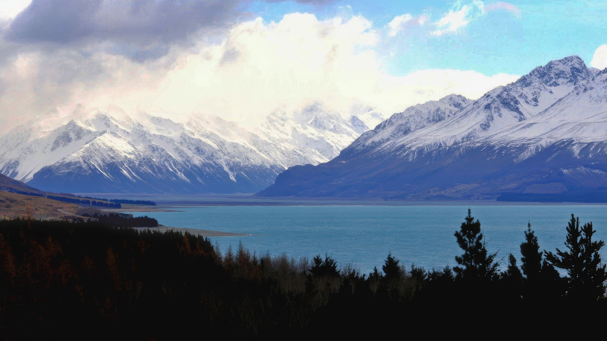

Mountains rise majestically, touching the sky with their rugged peaks and serene
beauty. They inspire adventure, offer solace, and cradle life in their timeless
embrace.
Fullscreen
THE MONTAIN
Lorem, Mountains rise majestically, their rugged peaks piercing the heavens and painting the horizon with a breathtaking silhouette. They stand as timeless sentinels of the earth, embodying strength, resilience, and tranquility. Beneath their lofty heights, they nurture diverse ecosystems, offering sanctuary to countless forms of life.
Featured
/01.02.24
THE FOREST
Forests breathe life into the world, their towering trees sheltering countless
creatures. They whisper ancient secrets, nurturing harmony and endless wonder.
Fullscreen
THE FOREST
These ancient realms whisper secrets carried by the winds, connecting us to the earth's deep history. They cleanse the air, nurture the soil, and sustain harmony in ecosystems that span generations. Forests inspire wonder with their endless beauty and resilience, serving as both sanctuary and lifeblood for the planet, reminding us of nature’s intricate balance and enduring magic.

Featured
/01.02.24
THE LAKE
Lakes shimmer with tranquil beauty, reflecting the sky and cradling life within their
depths. They offer peace, a stillness that soothes the soul.
Fullscreen
THE LAKE
Lakes provide peace and stillness, a gentle rhythm that soothes the soul and invites moments of quiet reflection. Along their shores, the whispers of rippling waves blend with the songs of nature, creating a haven of harmony. Timeless and enduring, lakes are nature’s reservoirs of calm and vitality, offering both inspiration and sustenance to all who encounter them.